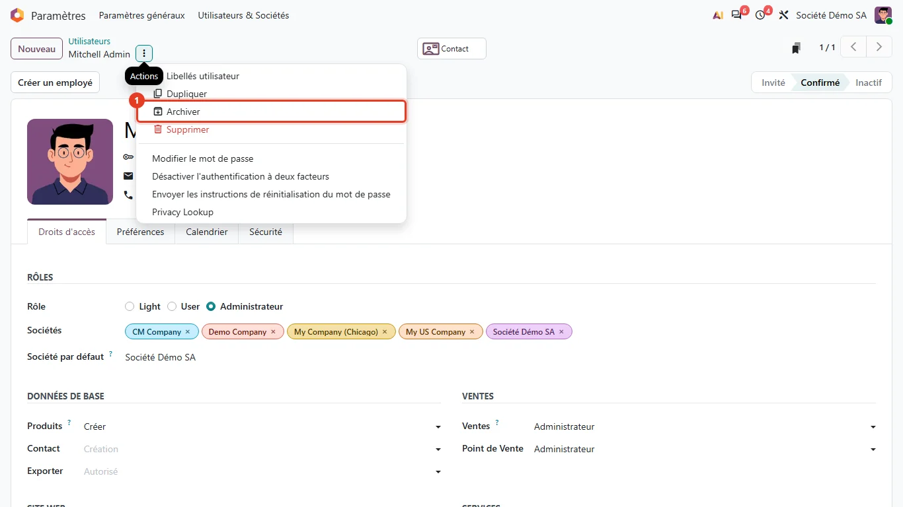

Modifier des droits et désactiver un utilisateur
Objectif. Tenir les accès à jour : changement de poste, départ, revue périodique.
Menu Odoo 15Paramètres > Utilisateurs et sociétés > Utilisateurs
Étapes
- Ouvrez l'utilisateur et modifiez ses Droits d'accès.
- En cas de départ, menu Action > Archiver (1) : l'accès est coupé, l'historique est gardé.
- Chaque trimestre, revoyez la liste des utilisateurs actifs et leurs droits avec la Direction.

À vérifier
- Aucun ancien salarié n'a d'accès actif.
À éviter
- Ne supprimez pas un utilisateur : archivez-le.
Exercice
Archivez un utilisateur de test puis réactivez-le.